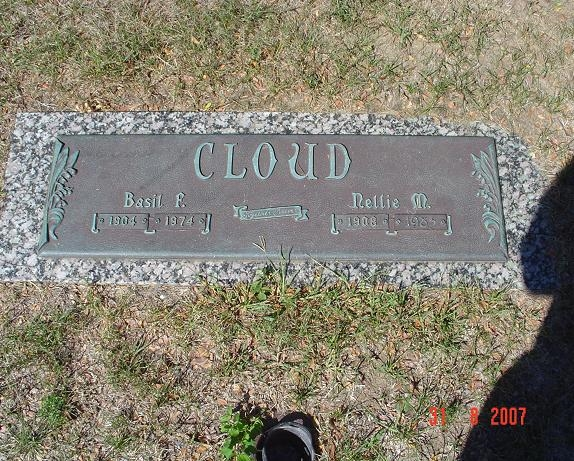
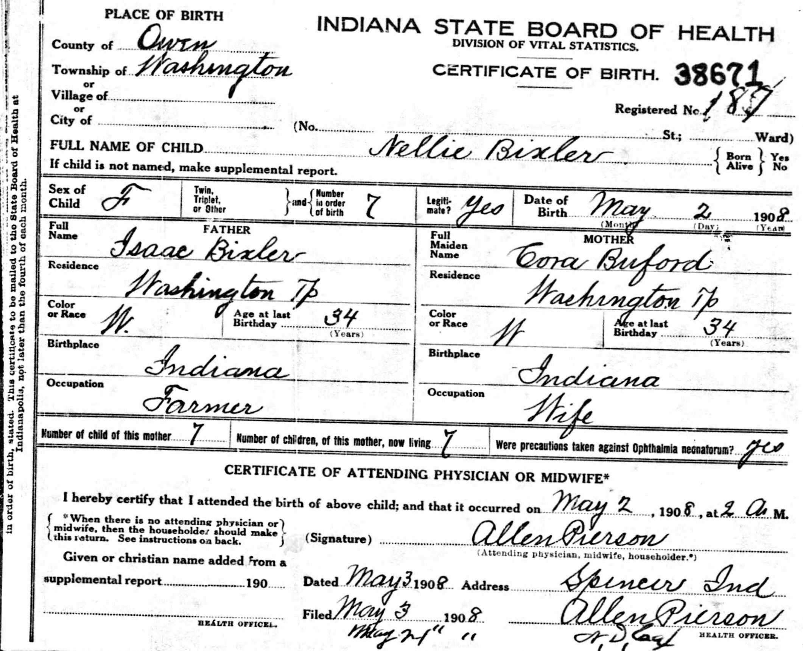
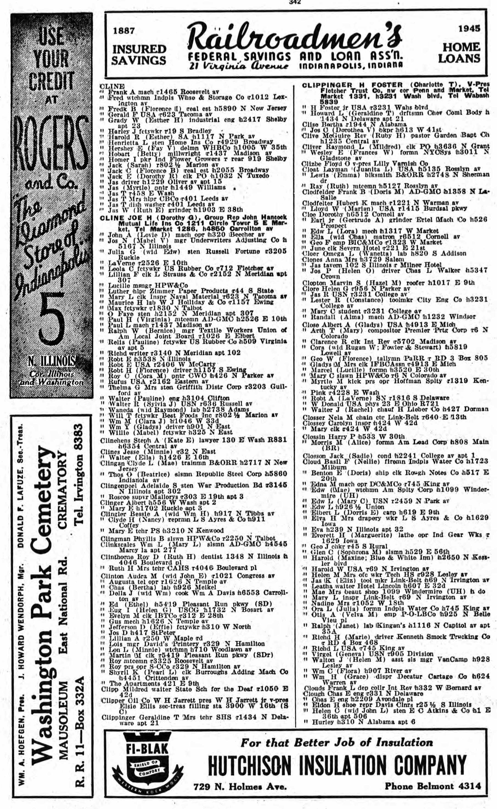
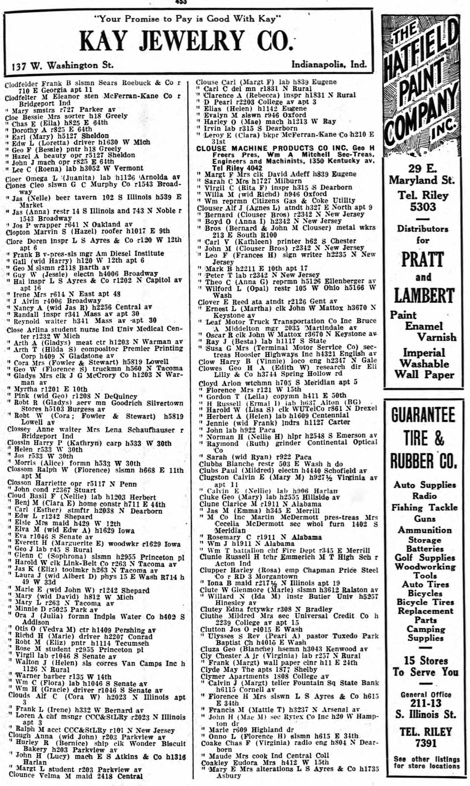

Nellie Mae Cloud (née Bixler) 1908 - 1985
[ Home ] | [ Calendar ] | [ Surnames Index ] | [ Census Index ] | [ Family History ]The 7th of 12 children of Thomas Bixler (a farmer) and Cora Bufford, Nellie Bixler, the fourth cousin twice-removed on the mother's side of Nigel Horne, was born in Washington, Owen, Indiana, USA on May 2, 19081,2,3,4 and married Basil Cloud (a laborer at water company with whom she had 3 children: Helen May, Frederick Lawrence and Shirley Elaine) in Owen, Indiana, USA on Mar 13, 19265.
During her life, she was living at her birthplace on Apr 21, 19107; in Owen on Jan 1, 19206; at 1361 W Ray Street, Indianapolis, Marion, Indiana on Nov 11, 1930; at 1203 Herbert Street, Indianapolis, Marion, Indiana in 1936; at 1723 Milburn Street, Indianapolis, Marion, Indiana in 1945; and in Indianapolis, Marion, Indiana in 1985 which is where she died on Jun 101,2,4. She was buried there at Floral Park Cemetery after Jun 10, 19852.
Parents
- Thomas Isaac was born on Mar 15, 1874
- Cora Pearl was born on Mar 26, 1874
Children
- Helen May was born on Apr 13, 1927
- Frederick Lawrence was born on Mar 11, 1930
- Shirley Elaine was born on Jan 28, 1943
Citations
- Social Security Death Index - Findmypast
- U.S., Find A Grave Index, 1600s-Current Ancestry.com Operations, Inc.
- United States Marriages - Findmypast
- United States Obituary Notices - Findmypast
- United States Marriages - Findmypast
- US Census 1920 - Findmypast (was age 11 and the daughter of the head of the household)
- US Census 1910 - Findmypast (was age 1 and the daughter of the head of the household)
Media
Basil Cloud - Nellie Bixler Grave

Nellie May Bixler - birth certificate

1945 City Directory

1936 City Directory

Indiana Marriages 1811-1959 Transcription - R_75586542
1940 US Census Transcription - USC-1940-1461728179
1930 US Census Transcription - USC-1930-004950631-00551-011
United States Marriages Transcription - FS-MAR-33738481-2
1920 US Census Transcription - USC-1920-004965836-00459-039
US Census 1910 - USC/1910/004971230/00612/031
Social Security Death Index - USBMD/SSDI/316700274
United States Obituary Notices - US/TRIB/036272536
Family Tree

Generated by ged2site. Last updated on Jun 11, 2024